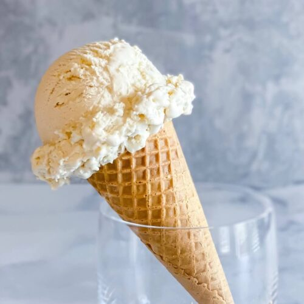

Vanilla Ice Cream

This will yield about 1 gallon of ice cream using an old-fashioned ice cream maker
This easy ice cream recipe requires no cooking and no eggs. Half-and-half and cream team up with sugar to create a simple, old-fashioned vanilla ice cream that tastes great.
Ingredients
- 2 quarts half-and-half
- 1.5 c white sugar
- 0.5 pints heavy cream
- 4 tsp vanilla extract
- 1 pinch salt
Directions
- Combine half-and-half, sugar, cream, vanilla and salt in the freezer container of an ice cream maker
- Freeze according to instructions, usually about 20 minutes
- Transfer to airtight container and freeze for four hours
- Let sit for 24 hours.
- Filter out grounds